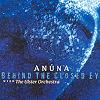

Celtic Lyrics Corner > Artists & Groups > Anúna > Behind The Closed Eye > The Coming Of Winter
|  | The Coming Of Winter |
| Credits : | Michael McGlynn |
| Appears On : | Behind The Closed Eye |
| Language : | Sean-Ghaeilge (Old Irish Gaelic) |
| Lyrics : | English Translation : |
| Gáethe ard úar, isel grían | Wind high and cold, low sun |
| Gair a rith, ruitheach rían | Short its running, sea runs strongly |
| Rogab úacht etti én | Cold grabs hold on the bird's wing |
| Aigre ré: é mo scél | An icy time: this was told to me |